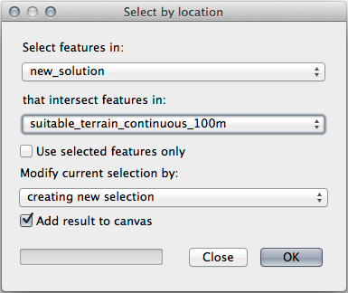

重要
翻訳は あなたが参加できる コミュニティの取り組みです。このページは現在 100.00% 翻訳されています。
8.2. レッスン: 分析を組み合わせる
ベクタ化されたラスタ解析の結果を使うと、適当な地形の上の建物のみを選択することができます。
このレッスンの目標: 適当な小地所を選び出すためにベクタ化された地形の結果を使う。
8.2.1. ★★☆ （中級レベル） 自分でやってみよう:
現在の地図 (
raster_analysis.qgs)を保存します。以前にベクタ解析中に作成した地図を開きます（ファイルを
analysis.qgsとして保存したはずです）。レイヤ パネルで次のレイヤを有効にします:
hillshade,
solution (または buildings_over_100)
これらのレイヤに加え、以前作業したときに既に地図に読み込まれているはずの
suitable_terrain.shpデータセットも追加します。もし、レイヤが足りない場合は、
exercise_data/residential_development/にあるはずです交差(intersect) ツール（ :menuselection:` ベクタ --> 空間演算ツール` ）を使って、
new_solution.shpという新しいベクタレイヤを作成し、 suitable_terrain レイヤと交差する建物のみを格納します。
あなたは解として特定の建物を示すレイヤを持っているはずです。例えば:
8.2.2. ★★☆ （中級レベル） やってみよう: 結果を検査する
new_solution レイヤの各建物を見て下さい。 new_solution レイヤのシンボロジをアウトラインだけに変更して、それらを suitable_terrain レイヤと比較して下さい。建物のいくつかを見て何に気づきましたか? それらは suitable_terrain レイヤと交差しているからといってすべて適当ですか? その理由は? どれが不適当だと考えますか?
答え
new_solution レイヤの一部の建物が 交差(intersection) ツールによって「スライス」されていることに気付くかもしれません。これは、建物の一部のみ、つまりプロパティの一部のみが適切な地形にあることを示しています。したがって、これらの建物をデータセットから適切に削除できます。
8.2.3. ★★☆ （中級レベル） やってみよう: 解析の改良
結果に含まれていた建物の中には本当には適していないものがありましたので解析を改良しましょう。
解析が完全に suitable_terrain レイヤ内にある建物のみを返すようにしたいです。そのためにはどうすればよいでしょうか？ 1つまたは複数のベクタ解析ツールを使うことと、建物はサイズが全て100m四方を超えていることを覚えておいてください。
答え
現時点では、このような解析ができるはずです:
四方100mに渡って連続する円形の区域を考えてみましょう。

半径100m以上の場合、その大きさから（全方向から）100mを引くと、真ん中に一部が残ることになります。

したがって、既存の suitable_terrain ベクタレイヤで100メートルの 内部バッファ を実行できます。バッファ関数の出力では、元のレイヤーに残っているものはすべて、100メートル先の適切な地形がある領域を表します。
実際に試してみましょう:
:menuselection:`ベクタ --> 空間演算ツール --> バッファ(buffer)`でバッファダイアログを表示します。
このように設定します:
suitable_terrain レイヤを使用して、
10のセグメントと-100のバッファ距離を設定します。（地図が投影型 CRS を使用しているため、距離は自動的にメートルで表示されます。）出力結果を
exercise_data/residential_development/にsuitable_terrain_continuous100m.shpとして保存してください。必要であれば、新しいレイヤを元の suitable_terrain レイヤの上に移動させます。
結果はこのようになります:
ここで、場所による選択 `ツール（:menuselection:`ベクタ --> 調査ツール --> 場所による選択）を使います。
次のように設定します:
 new_solution にある地物のうち、 suitable_terrain_continuous100m.shp にある地物と交差するものを選択します。
これがその結果です:

黄色い建物が選択されています。一部の建物は新しい suitable_terrain_continuous100m レイヤの外側にありますが、元の suite_terrain レイヤ内に十分に収まっているため、すべての要件を満たしています。
選択部分を
exercise_data/residential_development/の下にfinal_answer.shpという名前で保存してください。
8.2.4. 結論
これで当初の研究課題に答え、どの地所を開発するべきかに関する推薦の意見を（理由をもって、分析に支えられて）提示できます。
8.2.5. 次は?
次は2番目の研究課題の一部としてこれらの結果を提示します。